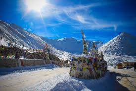
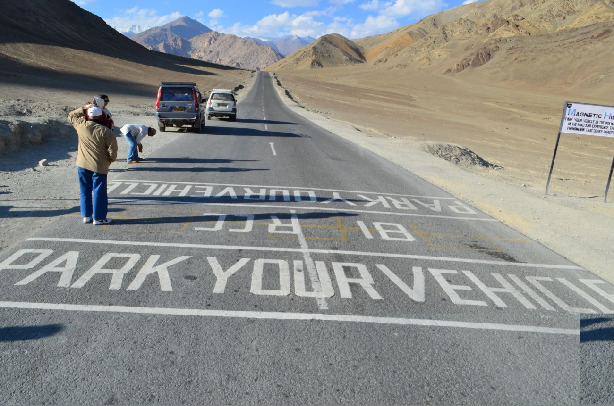
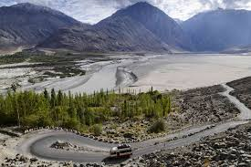
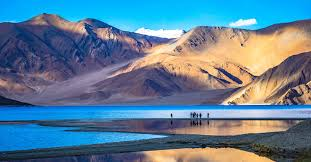
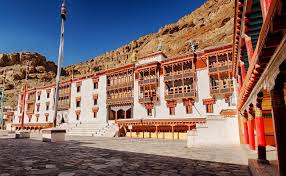
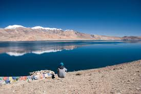
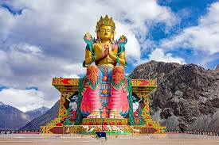

Places To Visit In Ladakh
Leh is the largest town of Ladakh in the state of Jammu and Kashmir. In the local dialect, the name ‘Ladakh’ literally means, ‘Land of High Passes.” Possibly one of the biggest tourist attractions in India, there are many beautiful places to visit in Leh Ladakh. Not only is the natural beauty overwhelming, but there are beautiful sites to visit for any traveler.Among the most stunning places to visit in Leh Ladakh is the Pangong Tso glacial lake at the foothills of the Karakoram Range. A mere five hours from Leh, this lake is home to the migratory bar-headed geese and Brahmi ducks. With beautiful snow-capped peaks, crystal clear water, and a stunning clear sky, this is among the top Leh Ladakh tourist places. Top tourist places in Leh Ladakh include the Thiskey Monastery. Truly among the best places to see in Leh Ladakh, this monastery is an imposing figure. Located at an altitude of three-thousand and six-hundred meters, the twelve-storied complex boasts of stupas, statues, thangkas, wall paintings, and much more. Definitely one of the most spiritually uplifting tourist places in Leh Ladakh.The Zanskar Virgin Valley among the most beautiful places to visit in Leh Ladakh.
Khardung La In Ladakh

Khardung La Pass, pronounced as ‘Khardzong La’ is also known as the ‘Pass of Lower Castle’. It is a mountain pass in Ladakh in the Indian state of Jammu & Kashmir.
This road is 39.7 km from Leh, located at an altitude of 5,359 meters. The work for construction was started in 1976 and opened for public in 1988. Khardung La Pass Ladakh is located on a caravan road from Leh to Kashgar in the mountain area. It acts as an entry point to the Nubra and Shyok valleys in Ladakh which is an important pass into the Siachen glacier. It is the most popular and frequently used pass in India. In olden days, mainly traders travelled through this road who used many horses and camels which navigated in a single line one after another to carry goods to Kashgar. This pass plays a significant role in transport for both India and China. Today, this road is vital for Indian Army since it is used to carry important materials to Siachen Glacier. This is a two way road and the nearest town to this pass is Leh which is routed to Manali and Srinagar.
Magnetic Hill, Ladakh

The Magnetic Hill in Ladakh is a road stretching on the Leh to Kargil national highway in the Himalayan region at an altitude of 14,000 KMs which is about 30 km from Leh. Magnetic Hill has Sindhu River flowing in its east which gives it picturesque beauty with the background of magnificent Himalayan Mountains. Magnetic Hill of Ladakh is also known as the ‘gravity hill’ since the area layout and the surrounding land creates an optical illusion by making a downhill slope appear to be an uphill slope. So, if a car is kept in neutral gear, it will start rolling uphill against gravity up to 20 Km per hour speed on its own. It is conceived that this mysterious wonder happens due to magnetic force. Hence the aircraft flying on this region increase its altitude to escape the influence of the magnetic field. Some people just drive through this region without knowing this effect. But those who know would stop their car at the spot to experience this mystical happening. This effect will work only at the right spot not anywhere else.
Nubra Valley In Ladakh

Nubra Valley is also known as ‘Ldumra’ which means ‘Valley of flowers’ is located in the north east of Ladakh Valley. Nubra is a cold dessert at high altitude with minimal vegetation. The crown of this valley is added with Shyok and Nubra River which gives it the phenomenal scenic richness. Extensive landscapes, gigantic mountains, serene lake, incredible trails, colourful monasteries, native villages make this valley stunning and beautiful. The Kashmiri and Tibetan artefacts, Pashmina shawls, woolen socks, almonds, apricots, apples and other things that are unique to Kashmir can be bought in Nubra Valley in Ladakh. The things to do in Nubra Valley are as follows.
Pangong Tso Lake In Ladakh

Pangong Tso translated as "high grassland lake" in Tibetan is a spectacular lake in the Himalayas situated at a height of about 4,350 m and 134 km long. The colour of Pangong Tso Lake changes to the different shades of blue, green and an unusual red. Pangong Tso is an endorheic lake because the water flow is terminated before reaching the ocean hence the minerals and salts are retained in this lake. Since there is no way for salt outflow, the water in the lake is salty. But during winter from November to March, the lake freezes completely even though it is a saline lake. So the best time to visit this dazzling lake is during summer between June and October.
Hemis Monastery In Ladakh

Hemis Monastery is one of the seven wonders of India and a world heritage site. King of Ladakh named Sengge Namgyal built this place and since then, it became one of the best tourist destinations in Ladakh. The Green hills around the place and the Indus River makes the Hemis Monastery look more beautiful and eye-catching. One of the major attractions of this place is the statue of Lord Buddha made with copper. You will also find other spectacular things in this place apart from the statue, such as gold and silver stupas, murals, thangkas. The place is filled with many paintings and other things of Buddhist Kalachakra. Visit Hemis Monastery in Ladakh to enjoy all of this along with the beautiful sight.
Shanti Stupa In Ladakh

Tourism in India is not complete without visiting Ladakh in Jammu and Kashmir. The mighty Himalayan backdrop with evergreen fields, magical white snow and lively lakes makes this region more suitable to add it to anyone’s bucket list. One of the wonder in Ladakh is Shanti Stupa. Shanti Stupa is a Buddhist religious shrine with a white dome located on the hill top of Chanspa at 5 KMs from Leh in the Ladakh region. Shanti Stupa was built by Japanese Buddhist Monk Bhikshu, Gyomyo Nakamura and part of the Peace Pagoda mission in the year 1991. This stupa is built as a mark of successful completion of 2500 years of Buddhism. This is built to spread world peace and as a symbol of friendship between Japan and Ladakh. The holy relics of Buddha are protected and are enshrined by 14th Dalai Lama at the base of the Shanti Stupa in Ladakh. This stupa is known to have various sculptures of Buddha depicting his life stories such as his birth, defeating the devils, and the death of Buddha on the panels.
Tso Moriri In Ladakh

Tso Moriri is also known as Lake Moriri which is located in Ladakh in Northern India. This is a protected area under Tso Moriri wetland conservation Reserve. This is known to be the largest high altitude lake all over Ladakh. This lake is formed when snow from mountains nearby melt. The only time you can have access to this lake is during summers.
Diskit Monastery In Ladakh

Diskit Monastery is one of the most happening places to add to the itinerary of places to visit in Ladakh. Also known as Diskit Gompa, it is one of the largest and oldest monasteries in Ladakh. Changzeb TserabZaongpo built this place, he is very famous for being the founder of Gelukpa. The place will give you thrill with the guardian deities images, big drums along with the famous statue of Maitreya Buddha. Diskit Monastery is also called The orchard of Ladakh for the Shyok river flowing under the hills and the greens surrounding the place. A very well-known festival named Dosmoche is performed in this Monastery, also known as the scapegoat festival.